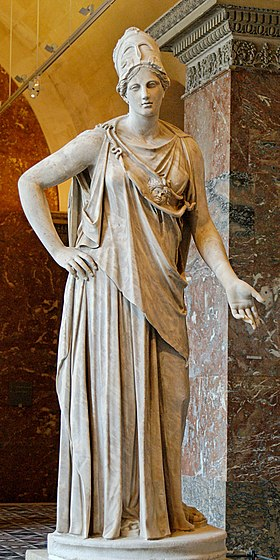

Рождение Афины
Как и положено в мифах, рождение богини Афины было необычным. Наиболее распространённая версия рассказана в «Теогонии» Гесиода: царь богов Зевс по совету Урана и Геи проглотил свою первую жену Метиду-Премудрость, когда та забеременела, чтобы предотвратить рождение ею после Афины сына, который свергнул бы Зевса. После этого он породил воительницу Афину-Тритогенею из своей головы.
Поэмы Гомера миф о рождении Афины игнорируют, а последующие авторы дополняют рассказ деталями и локализуют его. Краткие упоминания встречаются в гомеровском гимне к Аполлону Пифийскому, у Ивика и других поэтов, писателей и мифографов. При этом Метиду источники почти не упоминают, а у Эсхила Афина подчёркивает, что родилась без матери.
Эти детали таковы: предсказание Зевсу изрекли мойры либо сама Метида. Проглотив беременную Метиду, Зевс через некоторое время почувствовал страшную головную боль. Чтобы помочь её рождению, Гефест ударил Зевса топором по голове, а Прометей воспринял её из головы Зевса (по поздней версии, она родилась из бороды Зевса). Стесихор впервые упоминает, что Афина явилась из головы Зевса в полном боевом вооружении (паноплии). О доспехах говорится также в XXVIII гомеровском гимне и у орфиков. По Ликофрону, Афина родилась у Зевса на третий день.
Согласно Пиндару, когда родилась Афина, на Родосе пошёл золотой дождь. Кроме того, приводится и другое толкование её рождения: согласно некоему Аристоклу, Афина была скрыта в облаке и появилась из него благодаря удару молнии Зевса, произошло же это на Крите. В этом мифе «отразилось представление о рождении молнии и грома из тяжело нависшей грозовой тучи» .
Места рождения. Относительно её места рождения также существуют разногласия. Эсхил впервые фиксирует рассказ, что Афина родилась у озера Тритонида в Ливии. Геродот отмечает, что авсеи в Ливии считают Афину дочерью Посейдона и богини озера Тритониды.
